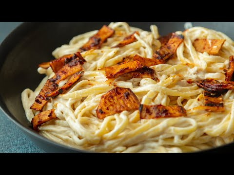

No oil creamy carbonara
Creamy delicious and the king oyster mushroom bacon is so good - this is a fabulous dinner and no oil and low in fat but not lacking in flavour. This makes a wonderful weekly dinner for any pasta lover.
Want to learn how to make delicious vegan food from scratch, then check out our newest book 'Vegan Cooking for Everyone', available to preorder on Amazon here

INGREDIENTS
INGREDIENTS - CREAMY SAUCE
- [] 50 g cashew nuts
- [] 250 ml oat milk
- [] juice of 1/4 of lemon
- [] ½ tsp garlic powder
- [] ½ tsp salt
INGREDIENTS - FACON
2 king oyster mushrooms
4 tbsp tamari
2 tbsp ACV
2 tbsp water
2 tsp maple syrup
2 tsp smoked paprika
3 tbsp tomato purée
1 tsp garlic powder
pinch of salt
DIRECTIONS
- Soak the cashew nuts in boiling water for 10 mins, drain and rinse.
- In a blender, blend all ingredients for the sauce until lovely and smooth.
- Cook the pasta as per the pack instructions in salted water and ensure to keep some of the pasta water. Drain and rinse the pasta and set aside.
- Mix together all ingredients for the “facon” marinade less the king oyster mushrooms. Slice up the king oyster mushrooms lengthwise into thin strips.
- Heat a non stick pan on high heat and add the sliced mushrooms.
- Using another similar sized pan put the slightly smaller pan over the mushrooms and compress the sliced mushrooms in the pan for 2-3 mins until they start to brown. Turn over and repeat until they have browned on both sides.
- Remove from the pan and add to the marinade and mix well.
- Reduce the heat of the pan to medium and add the marinade mushrooms back to the pan and cook for approx 1 min on each side, remove and set aside.